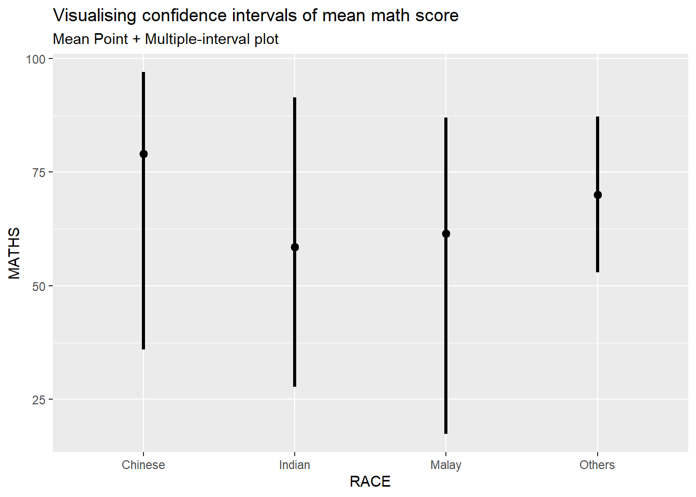
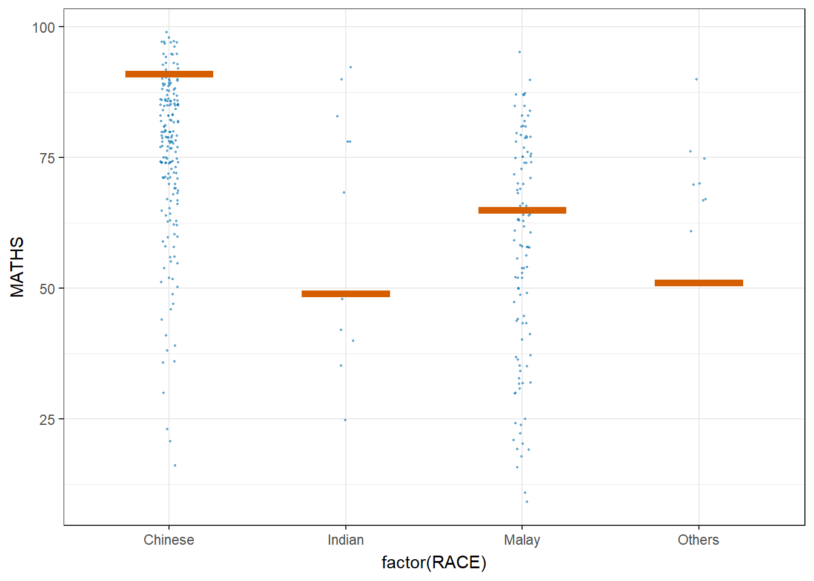

pacman::p_load(tidyverse, plotly, crosstalk, DT, ggdist, gganimate, knitr, kableExtra, infer) Visualising Uncertainty
Hands-on Exercise 4.3 : Fundamentals of Visual Analytics
1. OVERVIEW
This study explores approaches to visualise uncertainty of point estimates.
a point estimates is a reference point that can be defined by mean or other statistical parameter.
uncertainty is expressed as standard error, confidence interval or credible interval.
2. R PACKAGE REQUIRED
2.1 Load R Packages
3. DATA PREPARATION
3.1 Acquire Data Source
This study will be based on Toyota Corolla dataset.
3.2 Import Data
3.2.1 Import attribute data
Show the code
exam_data <- read_csv("data/Exam_data.csv")
problems(exam_data)# A tibble: 0 × 5
# … with 5 variables: row <int>, col <int>, expected <chr>, actual <chr>,
# file <chr>3.2.2 Identify variables’ type
Show the code
glimpse(exam_data, 70)Rows: 322
Columns: 7
$ ID <chr> "Student321", "Student305", "Student289", "Student22…
$ CLASS <chr> "3I", "3I", "3H", "3F", "3I", "3I", "3I", "3I", "3I"…
$ GENDER <chr> "Male", "Female", "Male", "Male", "Male", "Female", …
$ RACE <chr> "Malay", "Malay", "Chinese", "Chinese", "Malay", "Ma…
$ ENGLISH <dbl> 21, 24, 26, 27, 27, 31, 31, 31, 33, 34, 34, 36, 36, …
$ MATHS <dbl> 9, 22, 16, 77, 11, 16, 21, 18, 19, 49, 39, 35, 23, 3…
$ SCIENCE <dbl> 15, 16, 16, 31, 25, 16, 25, 27, 15, 37, 42, 22, 32, …4. UNCERTAINTY OF POINT ESTIMATES VISUALISATION
4.1 Visualise with ggplot2 package
There are 2 steps involved.
4.1.1 Compute statistical variables
my_sum <- exam_data %>%
group_by(RACE) %>%
summarise(n = n(),
mean = mean(MATHS),
sd = sd(MATHS)) %>%
mutate(se = sd/sqrt(n-1))
glimpse(my_sum)Rows: 4
Columns: 5
$ RACE <chr> "Chinese", "Indian", "Malay", "Others"
$ n <int> 193, 12, 108, 9
$ mean <dbl> 76.50777, 60.66667, 57.44444, 69.66667
$ sd <dbl> 15.69040, 23.35237, 21.13478, 10.72381
$ se <dbl> 1.132357, 7.041005, 2.043177, 3.791438Remarks :
Tabulate the tibble data table with functions from knitr and kableExtra packages.
kable(head(my_sum),
format = 'html') %>%
kable_styling(font_size = 12,
full_width = FALSE,
position = "left") %>%
column_spec(1, border_right = T)| RACE | n | mean | sd | se |
|---|---|---|---|---|
| Chinese | 193 | 76.50777 | 15.69040 | 1.132357 |
| Indian | 12 | 60.66667 | 23.35237 | 7.041005 |
| Malay | 108 | 57.44444 | 21.13478 | 2.043177 |
| Others | 9 | 69.66667 | 10.72381 | 3.791438 |
4.1.2 Visualise Standard Error of Mean
ggplot(my_sum) +
geom_errorbar(aes(x = RACE,
ymin = mean - se,
ymax = mean + se),
width = 0.2,
colour = "black",
alpha = 0.9,
size = 0.5) +
geom_point(aes(x = RACE,
y = mean),
stat = "identity",
color = "red",
size = 1.5,
alpha = 1) +
ggtitle("Standard error of mean maths score by rac")
ed_groupRace <- exam_data %>%
group_by(RACE)
ed <- Rmisc::summarySE(ed_groupRace, measurevar = "MATHS", groupvars = "RACE" ) %>%
mutate(mean = mean(MATHS))
glimpse(ed)Rows: 4
Columns: 7
$ RACE <chr> "Chinese", "Indian", "Malay", "Others"
$ N <dbl> 193, 12, 108, 9
$ MATHS <dbl> 76.50777, 60.66667, 57.44444, 69.66667
$ sd <dbl> 15.69040, 23.35237, 21.13478, 10.72381
$ se <dbl> 1.129420, 6.741249, 2.033696, 3.574602
$ ci <dbl> 2.227664, 14.837390, 4.031564, 8.243046
$ mean <dbl> 66.07139, 66.07139, 66.07139, 66.07139Remarks :
The stats values that derived are different.
4.1.2.1 Compute Lower and Upper CI
ed <- exam_data %>%
group_by(RACE) %>%
summarise(n = n(),
mean = mean(MATHS),
sd = sd(MATHS)) %>%
mutate(se = sd/sqrt(n-1),
low_ci = mean - qt(1 - (0.05 / 2), n-1)*se,
upp_ci = mean + qt(1 - (0.05 / 2), n-1)*se)
glimpse(ed)Rows: 4
Columns: 7
$ RACE <chr> "Chinese", "Indian", "Malay", "Others"
$ n <int> 193, 12, 108, 9
$ mean <dbl> 76.50777, 60.66667, 57.44444, 69.66667
$ sd <dbl> 15.69040, 23.35237, 21.13478, 10.72381
$ se <dbl> 1.132357, 7.041005, 2.043177, 3.791438
$ low_ci <dbl> 74.27431, 45.16952, 53.39408, 60.92360
$ upp_ci <dbl> 78.74123, 76.16382, 61.49480, 78.409744.1.2.2 Plot with Mean in Descending Order
ed$race_seq = with(ed, reorder(RACE, desc(mean)))
ggplot(ed) +
geom_errorbar(aes(x = race_seq,
ymin = low_ci,
ymax = upp_ci),
width = 0.2,
colour = "black",
alpha = 0.9,
size = 0.5) +
geom_point(aes(x = race_seq,
y = mean),
stat = "identity",
color = "red",
size = 1.5,
alpha = 1) +
ggtitle("Standard error of mean maths score by rac") +
ylim (45, 80)4.1.3 Visualise Distribution of Confidence Intervals
Show the code
exam_data %>%
ggplot(aes(x = RACE,
y = MATHS)) +
stat_pointinterval() +
labs(title = "Visualising confidence intervals of mean math score",
subtitle = "Mean Point + Multiple-interval plot")
Remarks :
!!!!! from Prof - Gentle advice: This function comes with many arguments, students are advised to read the syntax reference for more detail.
!!!!! How to makeover the plot on previous slide by showing 95% and 99% confidence intervals.
Show the code
exam_data %>%
ggplot(aes(x = RACE,
y = MATHS)) +
stat_pointinterval(.width = 0.95,
.point = median,
.interval = qi) +
labs(title = "Visualising confidence intervals of mean math score",
subtitle = "Mean Point + Multiple-interval plot")
Show the code
exam_data %>%
ggplot(aes(x = RACE,
y = MATHS)) +
stat_pointinterval(show.legend = FALSE) +
labs(title = "Visualising confidence intervals of mean math score",
subtitle = "Mean Point + Multiple-interval plot")
4.1.3.1 Add gradient to the plot
Show the code
exam_data %>%
ggplot(aes(x = RACE,
y = MATHS)) +
stat_gradientinterval(
fill = "skyblue",
show.legend = TRUE
) +
labs(
title = "Visualising confidence intervals of mean math score",
subtitle = "Gradient + interval plot")
4.1.4 Visualise Uncertainty with Hypothetical Outcome Plots (HOPs)
4.1.4.1 Install ungeviz package
Show the code
devtools::install_github("wilkelab/ungeviz")Show the code
library(ungeviz)4.1.4.2 Plot VCHOPs
Show the code
ggplot(data = exam_data,
(aes(x = factor(RACE),
y = MATHS))) +
geom_point(position = position_jitter(height = 0.3,
width = 0.05),
size = 0.4,
color = "#0072B2",
alpha = 1/2) +
geom_hpline(data = sampler(25,
group = RACE),
height = 0.6,
color = "#D55E00") +
theme_bw() +
transition_states(.draw, 1, 3)